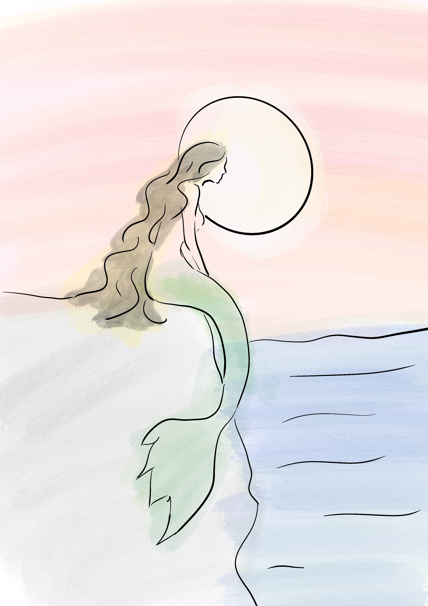

Iara: a lenda
Quem é Iara?
Segundo o folclore brasileiro, Iara é uma criatura de beleza extraordinária e poderes sobrenaturais. Embora frequentemente retratada como uma sereia, metade mulher e metade peixe, suas representações podem variar conforme a região, refletindo a diversidade cultural do país.
Iara é descrita como uma mulher de beleza irresistível, com longos cabelos negros e olhos verdes ou castanhos, que espelham os mistérios das águas onde vive. Sua aparência deslumbrante, somada ao canto doce e hipnotizante, atrai homens desprevenidos, que acabam enfeitiçados por sua presença.
Mais do que uma figura sedutora, Iara, também conhecida como Mãe d’Água,possui habilidades mágicas. Ela pode comandar as águas dos rios, causar tempestades e influenciar criaturas aquáticas. Sua essência, que transita entre o mundo humano e o natural, simboliza a ligação entre o visível e o invisível, a vida e a morte, o real e o mágico
Diz-se que Iara habita as profundezas dos rios da Amazônia, onde vive em um palácio encantado sob as águas. Esse reino misterioso é descrito como um lugar belo e acolhedor, destinado àqueles que se rendem ao seu feitiço.

Imagem autoral criada para aula DSG1863